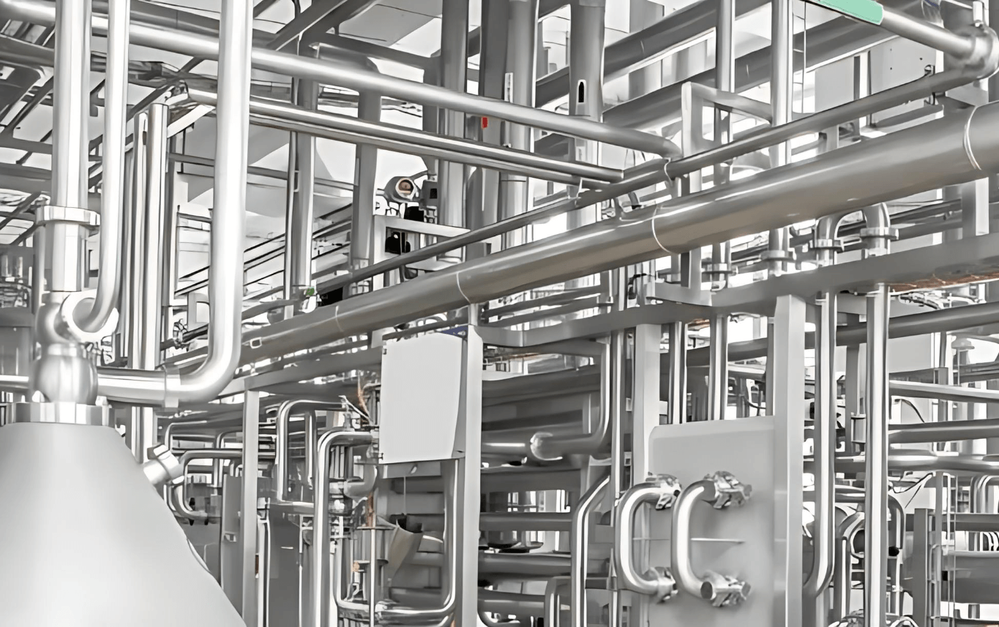
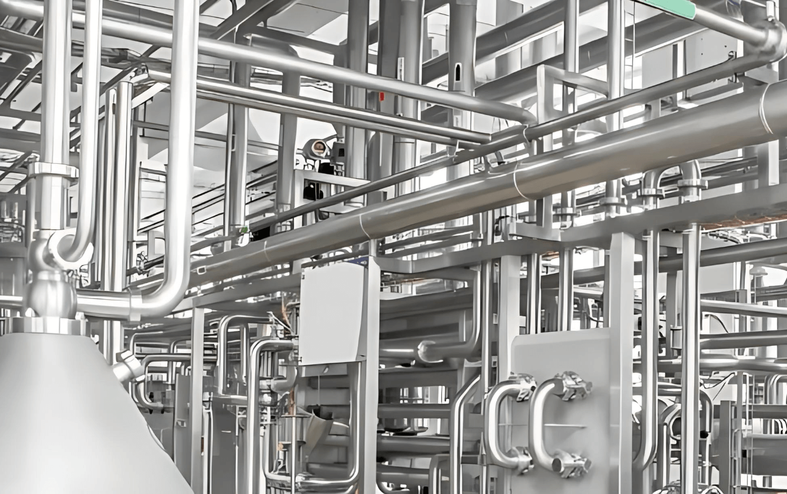

FARMACEVTSKA IN BIOFARMACEVTSKA INDUSTRIJA
Kot dobavitelj tehnologije za biotehnološko in farmacevtsko industrijo projektiramo, proizvajamo in nameščamo ustrezne rešitve za priznana in cenjena podjetja po vsem svetu.
Strankam zagotavljamo procesno in operacijsko ustrezne storitve ter ključne elemente za strokovno izvedbo projekta – vse na enem mestu. Naši strokovnjaki z dolgoletnimi izkušnjami na vseh ključnih področjih skrbijo za sistematično uresničitev zastavljenih ciljev.
PROCESNE POSODE
Vse posode so izdelane iz nerjavečega jekla in so na voljo kot samostojne komponente ali kot popolnoma avtomatizirani procesni sistemi, kot so: mešala, homogenizatorji, posode s celovito merilno opremo, kontrolnimi enotami, ventili in cevnih priključki. Na voljo so tudi izvedbe za delovanje v nevarnih okoljih. Naši izdelki so skladni z Direktivo o tlačni opremi in v določenih primerih tudi certificirani po ATEX standardu.
SKID SISTEMI
V našem kovinarstvu smo specializirani za razvoj in izdelavo skid sistemov, ki združujejo robustne kovinske konstrukcije in tehnološko opremo v modularne enote. Naši skid sistemi zagotavljajo enostaven transport, hitro montažo in učinkovito integracijo v različne industrijske procese.
▼
Naši skid sistemi so zasnovani z mislijo na prilagodljivost, robustnost in tehnološko učinkovitost, kar omogoča njihovo uporabo v različnih industrijskih panogah. Ključne prednosti naših skid sistemov vključujejo:
Modularna zasnova:
- Omogoča enostavno nadgradnjo ali prilagoditev glede na specifične zahteve strank.
- Zmanjšuje stroške prenove in skrajša čas implementacije novih procesov.
Robustna konstrukcija:
- Kvalitetni materiali in natančna izdelava zagotavljajo dolgo življenjsko dobo.
- Zasnova upošteva vse standarde kakovosti in varnosti, kar omogoča zanesljivo delovanje tudi v zahtevnih industrijskih okoljih.
Integracija napredne tehnologije:
- Vključuje senzorje za spremljanje procesov, avtomatizirane krmilne sisteme in povezljivost z industrijskimi informacijskimi sistemi (SCADA, MES).
- Omogoča natančen nadzor, hitro odkrivanje nepravilnosti in optimizacijo proizvodnih procesov.
Enostaven transport in montaža:
- Modularna enota omogoča hitro premikanje in integracijo na lokaciji naročnika.
- Skrajša čas montaže in zmanjšuje izpade v proizvodnji.
Enostavno vzdrževanje:
- Praktična zasnova omogoča hitro servisiranje posameznih komponent.
- Podaljšuje življenjsko dobo sistema in zmanjšuje stroške obratovanja.
Celovita podpora strankam:
- Nudimo podporo od konceptualnega načrtovanja, izdelave prototipov in testiranja, do montaže in servisa.
- Vsak skid sistem je optimiziran za specifične potrebe posamezne proizvodnje.
WIP-CIP-SIP ENOTE
Ključni del visokokakovostne proizvodnje je integriran sistem WIP/CIP/SIP. Btinox zagotavlja učinkovite in pravočasne postopke čiščenja in sterilizacije, skladne z zahtevami naročnika. Ponujamo širok nabor rešitev – od mobilnih in samostojnih čistilnih sistemov do integriranih CIP satelitskih sistemov.
▼
Sistema CIP in SIP sta zasnovana za avtomatsko osnovno čiščenje in dezinfekcijo, brez nepotrebne izgube časa za montažo in demontažo.
Optimizacija procesov je odvisna od učinkovitega in zanesljivega čiščenja. Sistemi CIP se lahko integrirajo v celotno opremo za farmacevtsko industrijo, vključno s trdnimi in tekočimi dozirnimi sistemi. Avtomatizacija procesov čiščenja zagotavlja ponovljivost, omogoča validacijo in zmanjšuje izpade.
Najučinkovitejši način uvajanja CIP tehnologije je njena načrtna integracija v proces. Pri vključevanju pršilnih sistemov, čistilcev rezervoarjev, šob in tesnil za avtomatizacijo čiščenja upoštevamo vse dele vašega sistema – od dovoda do praznjenja.
Avtomatizacija cikla čiščenja predvsem preoblikuje šaržne farmacevtske procese v neprekinjeno delovanje proizvodnih in čistilnih ciklusov.
Prednosti CIP sistema so:
- krajši cikli čiščenja
- optimizirana uporaba detergenta in vode
- odprava ročnega čiščenja
Naša ogrodja za CIP/WIP sisteme so zasnovana, projektirana, avtomatizirana in testirana. Celovit pristop omogoča odprto komunikacijo med strokami ter hitro odzivnost na morebitna odstopanja med projektom. Za vsak projekt je zadolžen projektni/procesni inženir, ki strokovno vodi pogovore o specifičnih zahtevah, integraciji sistema in zaključnih FAT protokolih.
BIOREAKTORJI-FERMINATORJI
Na podlagi naših številnih izkušenj pri projektiranju, izdelavi, zagonih in izvedbi validacij farmacevtske opreme, prilagojene specifičnim uporabniškim zahtevam, smo razvili nadaljnjo linijo izdelkov.
▼
Bioreaktorski in fermentacijski sistemi so vrhunec našega strokovnega znanja in so v celoti izdelani v naših objektih. Vključujejo sterilno zasnovo v skladu s cGMP, inženiring, montažo ter izvedbo z našim oddelkom za elektriko in avtomatizacijo, ki opremi vdihne “življenje” in zagotavlja odlično delovanje za stranke v biotehnološki industriji.
 

OGREVALNI IN HLADILNI SISTEMI
Nadzor temperature in mešanje produkta med procesom sta ključna za doseganje uspešnih in ponovljivih rezultatov.
Btinox zagotavlja, da se temperatura produkta v posodi giblje v ozkem območju (+/- 0,5 °C), s čimer preprečimo nezaželene spremembe izdelka med proizvodnjo. Visoko stopnjo nadzora temperature in homogenost izdelkov dosegamo z uporabo najsodobnejše tehnologije prenosnikov toplote ter skrbnim mešanjem. Natančne merilne naprave spremljajo vse ključne parametre, kot so pH, O₂, temperatura in hitrost mešanja skozi celoten proces.
GMP MEDIJI
Načrtujemo, nameščamo, zaganjamo in validiramo proizvodne procese, obratovalne pogoje ter vzdrževanje sistema za shranjevanje in distribucijo, s čimer zagotavljamo ustrezno kakovost medija.
▼
Farmacevtska, biotehnološka, živilska in kemična industrija zahtevajo najvišje standarde za visokokakovostne cevovode.
Odlična organizacija, dolgoletne izkušnje, najsodobnejša oprema in stalna optimizacija različnih varilnih tehnik so ključni za uspešno izvedbo projekta. Naša naloga je, da strankam zagotovimo izpolnitev vseh teh pogojev.
Stranka je v središču vseh naših aktivnosti. Naše storitve zajemajo načrtovanje, koordinacijo, montažo in dokumentiranje procesnih sistemov, pa tudi inšpekcijske preglede za zagotavljanje kakovosti in nemoten zagon.
Poleg konstrukcij iz nerjavečega jekla, okvirjev in posebnih sestavnih delov, strankam zagotavljamo tudi popolnoma vnaprej sestavljene enote.
Za zagotavljanje zadostnih količin vode, ki mora izpolnjevati standarde USP in Ph. EUR, mora biti priprava vode skladna z določenimi zahtevami. Upoštevati je treba številne predpise in standarde, saj je vodni sistem podvržen strogemu nadzoru in pregledom. Mi skrbimo, da so vse te zahteve izpolnjene.
Glede na vaše potrebe bomo projektirali, sestavili, dostavili in namestili sistem za shranjevanje vroče (WFI) ali hladne (PW) vode. Vsako vzorčevalno mesto v zanki je mogoče opremiti z ventilom za vzorčenje in priključki za sterilizacijo zanke. Potrebna merilna tehnologija za pretok in TOC je del serijske opreme. V te sisteme vključimo vse enote, potrebne za proizvodnjo purificiranih medijev.


AVTOMATIZACIJA
Avtomatizacija pomeni več kot le programiranje in elektroinženiring. Poleg našega strokovnega znanja na področju avtomatizacije ta tehnologija zahteva tudi poglobljeno razumevanje procesnega inženiringa ter proizvodnih obratov ter bogate izkušnje pri izpolnjevanju zahtev.
▼
Btinox oskrbuje sodobne proizvodne obrate v farmacevtski industriji z avtomatizacijskimi rešitvami za celotno procesno verigo – od višjih do nižjih ravni ter od samostojnih sistemov posameznih postaj (skid enot) do kompleksnih centralnih sistemov vodenja procesov.
Različni procesi v živilski industriji, kot je mlekarstvo, so prilagojeni za proizvodnjo različnih mlečnih izdelkov.
Posledično je avtomatizacija teh procesov prav tako raznolika in večplastna.
NAČRTOVANJE-VALIDACIJA-DOKUMENTACIJA
Načrtovanje vseh zgoraj omenjenih procesov, priprava osnovnih in podrobnih načrtov, specifikacij materialov in del, URS, 3D-modeliranje, izdelava, podrobni načrti za izdelavo, »as-built« načrti/projekti, tehnična dokumentacija, validacijska dokumentacija ter izvedba validacije.
▼
Priprava in izvedba projektov ter opreme v skladu z ATEX. Avtomatizacija vsega zgoraj omenjenega, vključno z električnimi priključki, projektno in tehnično dokumentacijo ter validacijsko dokumentacijo in njeno izvedbo.
Zagotavljamo skladnost z GxP in drugimi uradnimi zahtevami (FDA, EMA itd.) ter upoštevanje veljavnih standardov pri gradnji in preoblikovanju celotnih naprav ali njihovih delov v farmacevtski industriji.
Leta izkušenj, nadaljnje usposabljanje in izkušnje v farmacevtski industriji nam omogočajo, da kvalifikacijo izvedemo obsežno in z najvišjo kakovostjo.